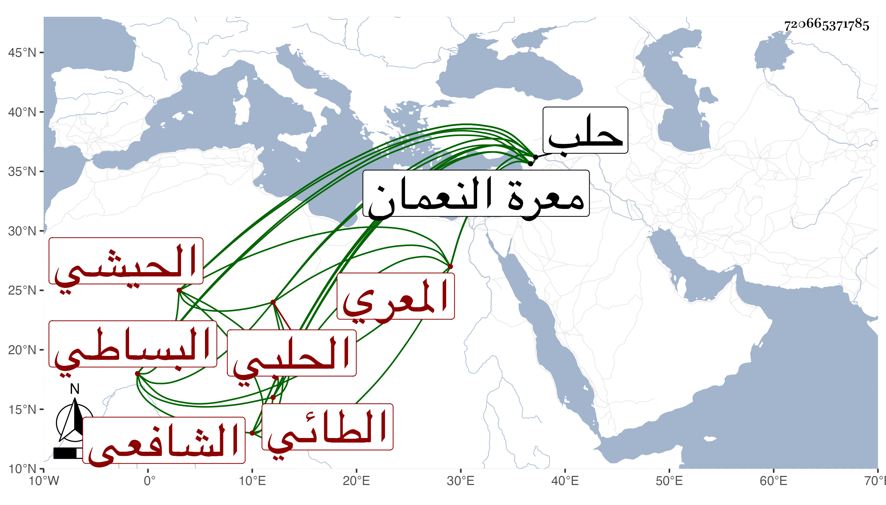

0902Sakhawi.DawLamic.ITO20230111-ara1.EIS1600.720665371785
Biography ID: 720665371785
480
محمد بن أبي بكر بن نصر بن عمر بن هلال الشمس أبو عبد الله الطائي الحيشي الأصل المعري ثم الحلبي الشافعي البساطي الآتي أبوه وولده معا في الكنى والماضي أخوه عبد الله ويعرف بابن الحيشي . ولد سنة تسع وتسعين وسبعمائة بمعرة النعمان ونشأ بها في كنف أبيه وتحول معه إلى حلب وبه تسلك وعليه تهذب وكذا صحب الزين عبد الرحمن بن أبي بكر بن داود وأخذ القراءات عن عبد الصمد العجمي نزيل حلب والحديث عن البرهان الحلبي وشيخنا لما قدمها عليهم ، وخلف والده في المشيخة بدار القرآن العشائرية ، وكان معمور الأوقات بالتلاوة والذكر والمطالعة مع الزهد والانجماع عن بني الدنيا وتقنع باليسير ، وللناس فيه مزيد اعتقاد بحيث يقصد بالزيارة والارفاد بما يكون عونا على سماطه ، وقل أن ترد له رسالة . ما في يوم الثلاثاء تاسع ذي القعدة سنة خمس وسبعين ودفن عند أبيه بتربة الناعورة بحلب رحمه الله . أفادنيها ولده .
